COS426 Assignment 3 Ray Tracer — Writeup
Switch to: Interactive Editor
That all images in this writeup were generated directly by my solution code or provided by the course staff (exception: art contest submissions may pass through intermediary software like GIMP)
That no other student has viewed my writeup explanations or my writeup images
That my solution code is my own work; particularly that my solution was not copied from any other student's solution code, and that no other student copied their solution directly code from me
That I did not discuss assignment specifics or view the solution code of any other student besides that of my (optional) partner
That I have followed all other course collaboration and course plagiarism policies as written on the course website.
Danica Truong (dtruong)
Collaborated with: N/A (n/a)
- (1.0) Trace Ray and Calculate Color
- (2.0) Triangle
- (2.0) Sphere
- (2.5) Box
- (3.0) Cone
- (1.0) Shadows
- (3.0) Soft shadows
- (2.0) Transmission
- (1.0) Checkerboard
- (1.5) Phong material
- (1.5) Special material
ONE (1) LATE DAY USED
TraceRay
For the first part of the assignment, I followed the provided
instructions to complete the traceRay and calculateColor
functions.
Triangle
For implementing findIntersectionWithTriangle, I used the second explained method from lecture (Ray-Triangle Intersection II). First, I found out if the ray even interescts with the plane the triangle is on. If not, then theres not need to check if it intersects the triangle itself. Next, I followed the given algorithm for each side of the triangle, finding out if the dot product of the ray.directoin and the cross product of the vectors of the point of intersection to the plane to the respective corners is less than zero. After testing this for all sides of the triangle, I set the out vector intersect's position and normal to the position and normal of the intersection point of the ray and the triangle. Finally, I returned the distance between the origin of the ray and the intersection point found.
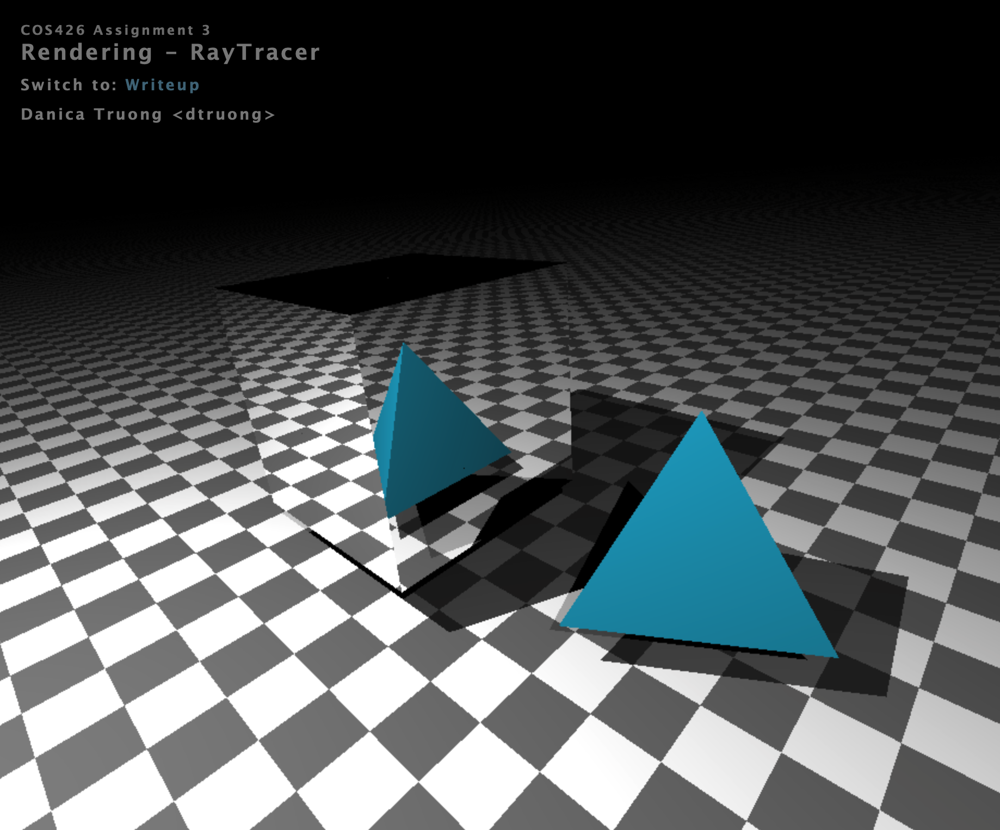
Sphere
For implementing findIntersectionWithSphere, I used the explaination from lecture/precept. As the algorithm is despcribed, I first found the distance beteween the ray origin and the center of the sphere given (set as variable vec3 L), then took the dot product of such distance to the ray direction vector (variable float tca). If this dot product is less than 0, then no intersection exists. I then defined a dSquard, which is the distance squared subtracted by the previous dot product value squared, which geometrically describes the length along the ray direction vector that is needed to be traversed until you are adjacent to the sphere origin. If this value is greater than the radius squared, then the ray does not intersect the sphere. Next, I defined the variable thc as the square root of the radius squared minus dSquared to get the distance between the point of intersection to the center of the sphere along the ray direction vector. Finally, I defined two distances from the two points of intersection using tca - thc and tca + thc respectively. The shorter of the two distances corresponds to the nearest valid intersection point. I then used this point to define the intersect's position and normal (normalized the position found minus the sphere's center position). This function returns the distance from the ray origin to the point of intersection and INFINITY if no such intersection exists.
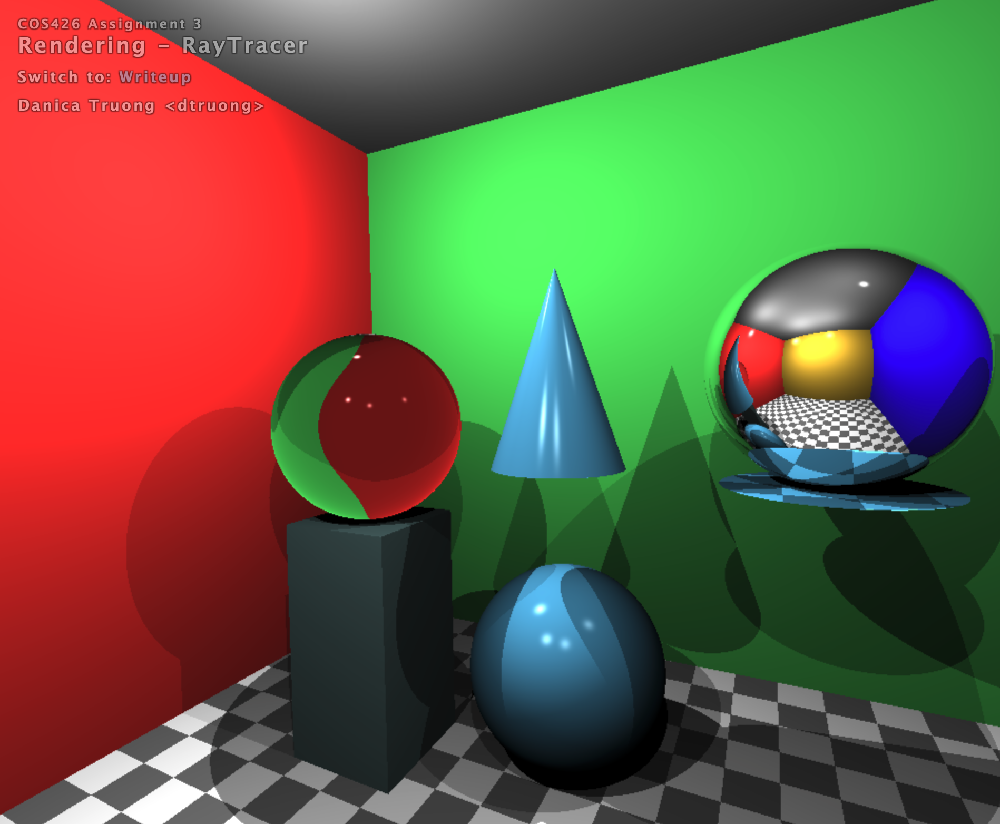
Box
For implementing findIntersectionWithBox, I followed the algorithm described in lecture/precept. By treating each side of the box as its own plane, I was able to use findIntersectionWithPlane using the constraints of the given box (pmin and pmax). I defined an inBounds helper function which allowed me to check if the found intersect point with the plane and ray is within the bounds of the given box. THen, I used chooseCloserIntersection between the faces of the box to determine which intersection point was the closest to the ray's origin. This distance (ray origin to intersection point) is returned if such intersection point exists and INFINITY is returned otherwise.
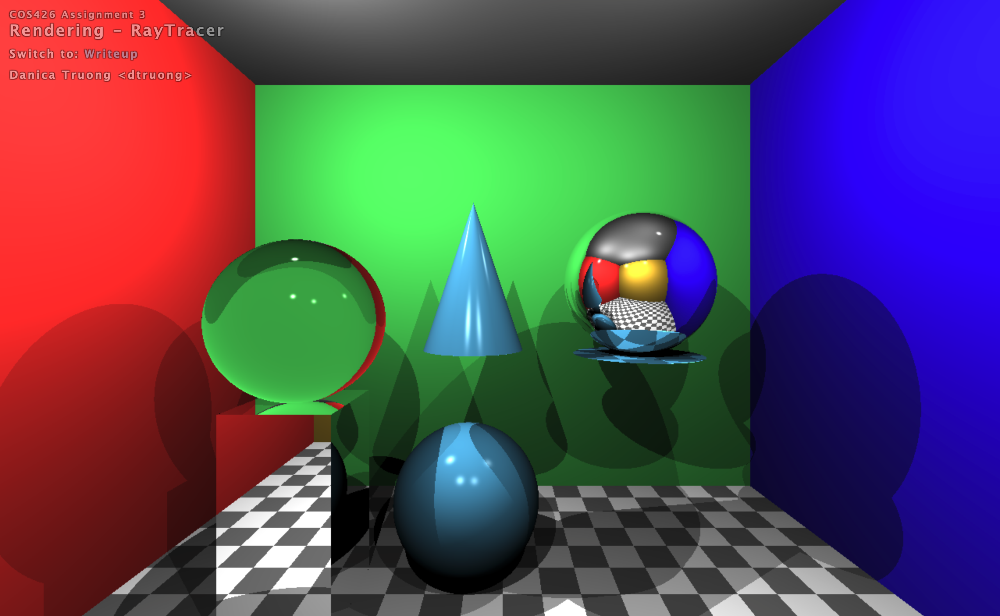
>Cone
For implementing getIntersectOpenCone, I had to also implement getIntersectDisc. These algorithms are defined in the A3 description on the site. Firstly, with the cone intersection, I followed the given formula (each of my defined variables correspond to the ones described here):
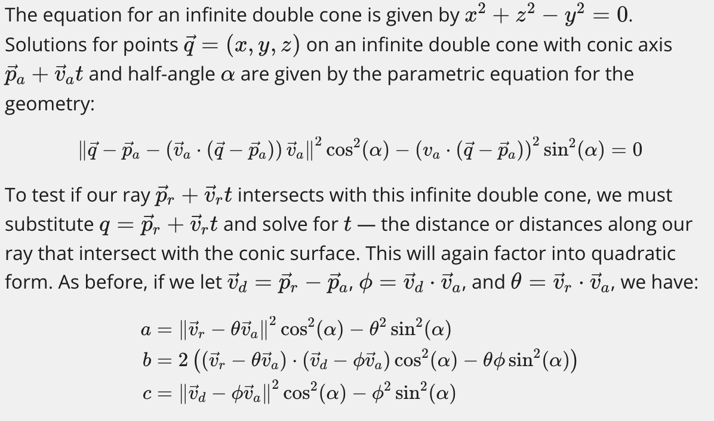
Next, I found the variable t by solving the quadratic formula using the values of a, b and c. Because the quadratic formula gives us two values, I had to test each t and choose the closest intersection point. A point interescts if the following relationship holds: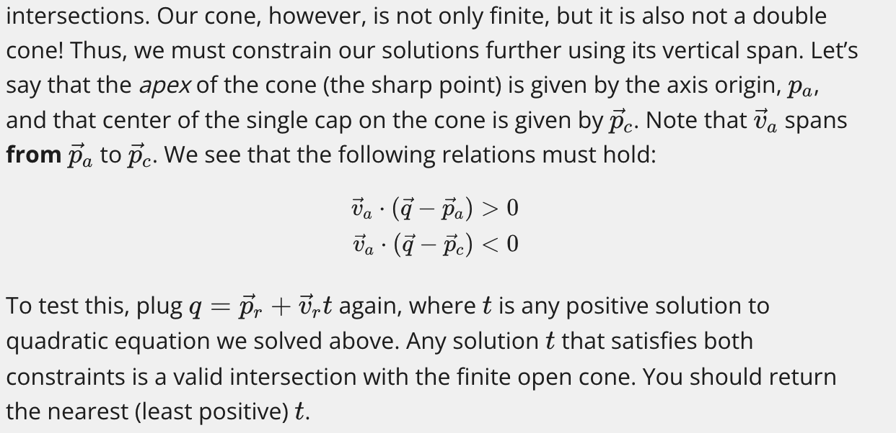
Then, the interesect position is set to the closest found intersection point. The normal of the intersection is perpendicular to the surface of the cone and found using this method: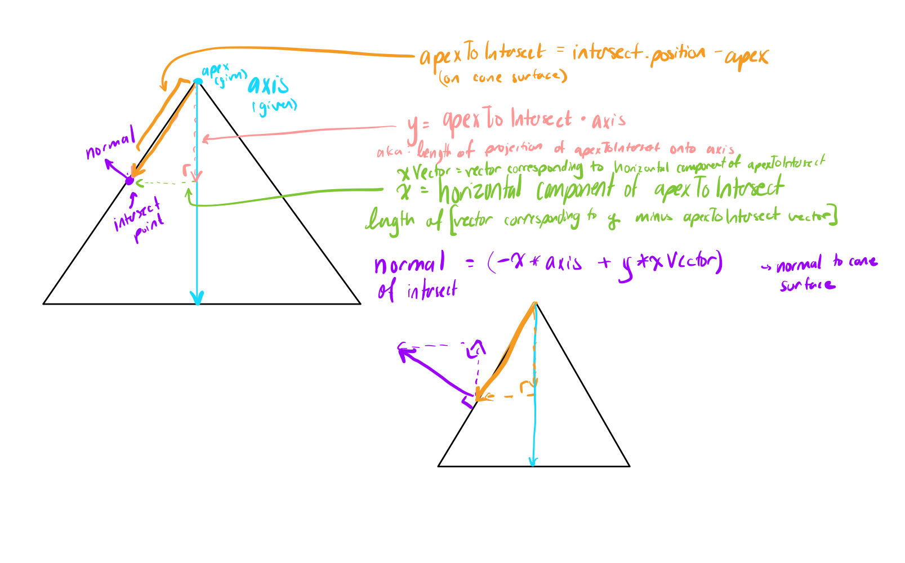
Please note that since I implemented cone, there is a floating disc underneath the right sphere (I assume this is for cylinder which I did not implement).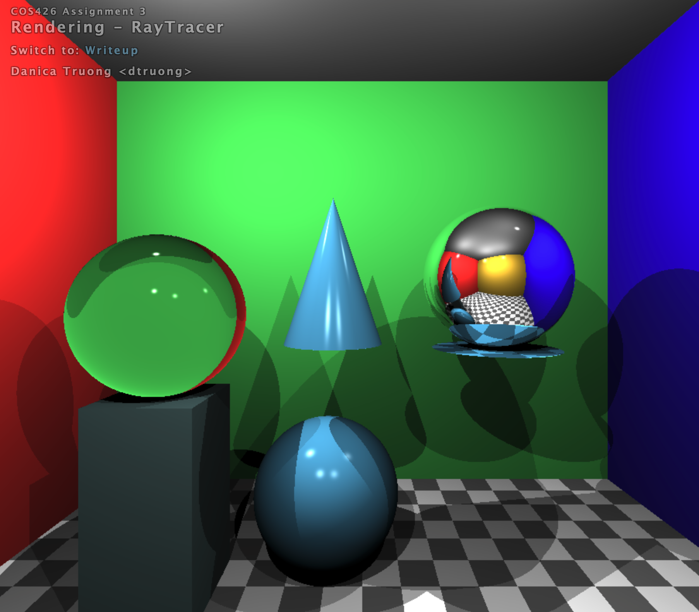
Shadows
For implementing pointInShadow, I followed the description given in precept. Firstly, I defined a new Ray object which is a ray with an origin defined with the given position (pos) and a direction defined as the lightVec given (vector from position to light). I used rayIntersectScene to find the length of this ray, which would be a little less than the length of the lightVec itself if the given point is in the shadow.
Soft shadows
For implementing softShadowRatio, I followed the description given in precept. First, I calculated the sample size using the defined SOFT_SAMPLING variable. I also defined a variable pi equal to the digits of pi. I also defined a variable to keep count of how many points are in the shadow. I used the rand method found in https://stackoverflow.com/questions/4200224/random-noise-functions-for-glsl which was found within the assignment details. By using this method, I was able to define a random noise variable (dependent on the current grid position) to map x to a random position within [0, 2pi) and map y to a random position within [-1, 1). This gives us the intersect point for each point within the area as:
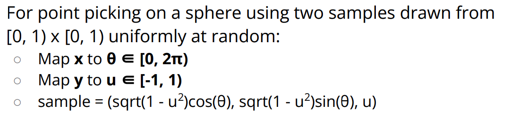
The ray (from point given to the randomly sampled point) direction is the offseted given lightVec (offseted by the intersect point found). If the length of this vector minus the distance between the ray and the intersect value equals 0, then the sampled point is in the shadow. Finally, I returned the number of points in the shadow divided by the number of shadow rays (value of SOFT_SAMPLING), which is the fractional light contribution. Results with SOFT_SAMPLING = 3.0Results with SOFT_SAMPLING = 25.0
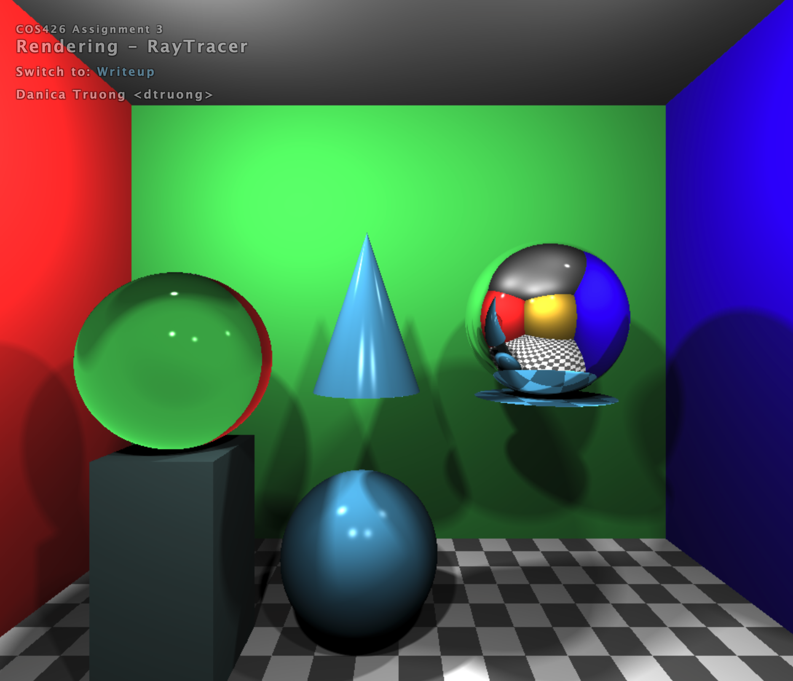
Transmission
For implementing calcReflectionVector, I followed described Snell's Law in lecture/precept.
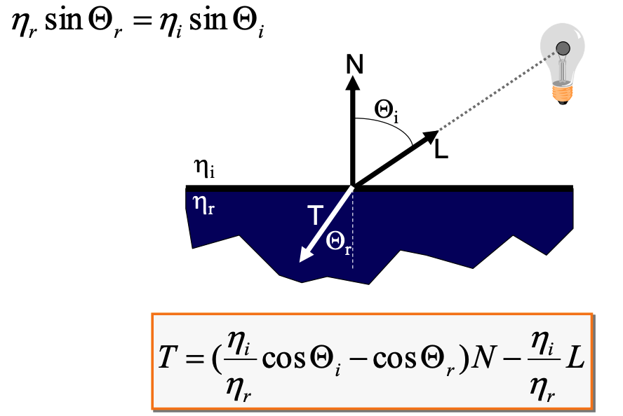
Note that since the normal vector was already negated, I had to use the negated direction vector in my calculations. Transmission is implemented in all result images.Checkerboard
For implementing checkerboard, I followed described method in precept. Firstly, quantized each position value (x, y, z) to a unit grid. Based on this, I returned the original material color if the point was in a "white" checkerboard box. If the point was in a "black" box, I calculated the average of the material's color at that point and divide the original material color by that average. To make it darker, I inverted the luminosity.
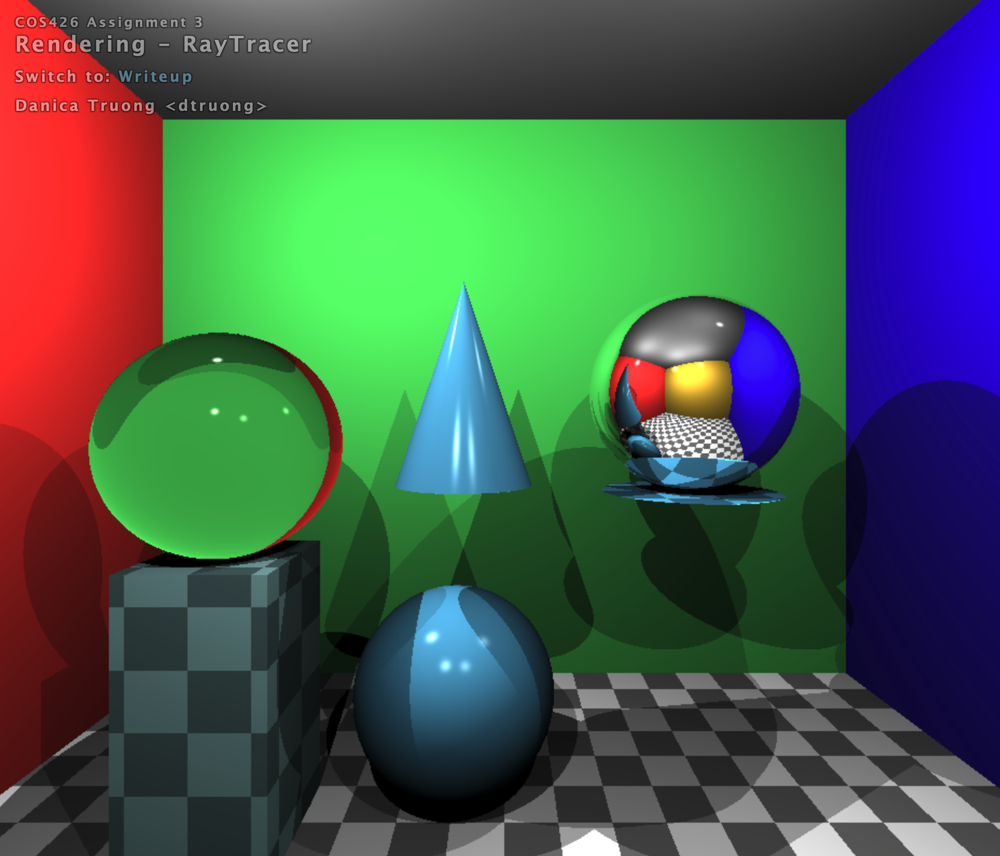
Phong material
For implementing phong, I followed described method in lecture/precept.
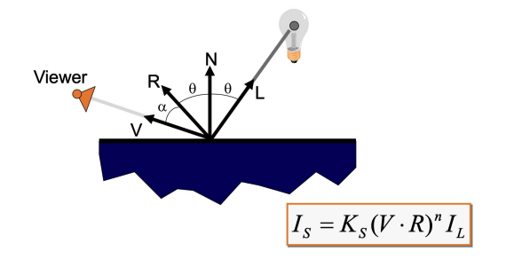
Phong is implemented in all result images.Special material
For implementing my special material, I used the rand method (as seen in soft shadows). Since I was playing around with this method during my soft shadows implementation, I just used a bit of code from there. I created a noise variable which contains three randomly floats based on the three combinations of position values. I then multiplied each position value by their corresponding noise value and divided the material's original color by (noise multiplied by average found). This value was picked arbitraily (I tested multiple combinations and this looks the most interesting in my opinion). Results: